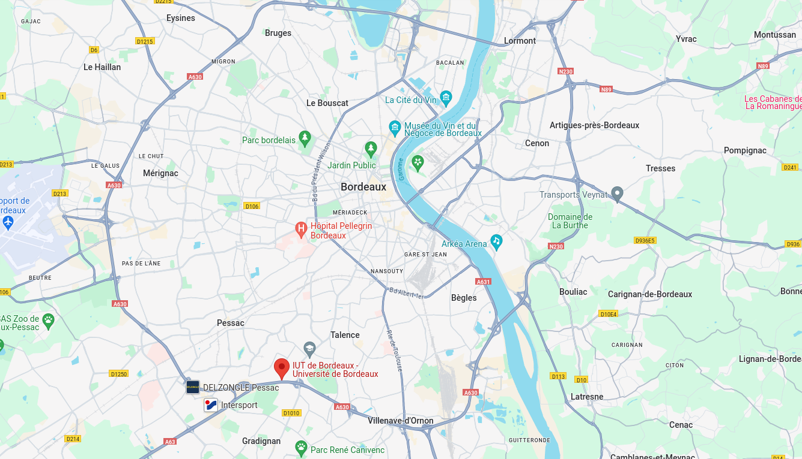

Accueil
Ma formation
Mes retours d'expérience
Compétences informatiques
Institut Universitaire de Technologie site de Bordeaux-Gradignan
Filière : informatique

15 Rue de Naudet, 33175 Gradignan
Compétences travaillées
En savoir plus